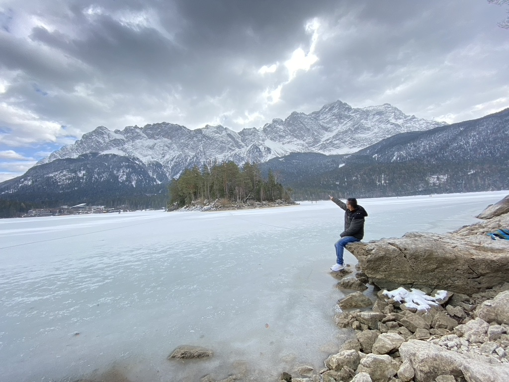

Everything as code
Infrastructure, pipelines and alerts live in Git, are reviewed like application code and can be rebuilt from scratch.
I’ve worked in telecom, banking and payments, and in every role I’ve kept critical systems running and made them easier to operate.

I’m a self-driven, problem-solving Site Reliability Engineer with a passion for cloud computing and Kubernetes. I take charge of complex assignments and enjoy delivering high-quality implementations.
My path started in 2013 as a system administrator at Websurfer Nepal, running RHEL and CentOS servers for DNS, mail, LDAP and databases, and setting up network monitoring with Nagios, Cacti and OpenNMS. I then moved to Germany for a Master’s in Information & Communication Engineering. For my thesis at the Huawei European Research Center in Munich, I extended the open-source SDN emulator Mininet to run Docker containers as network functions.
Next came Qualcomm, where I field-tested LTE modems across Europe with Ericsson, Huawei and Nokia infrastructure. Then I moved into fintech at Wirecard. There I managed 500+ Linux VMs and 200+ EC2 instances behind a card-issuing platform, then joined the SRE team to automate away operational toil.
Since 2020 I’ve been at Unzer, first as a Senior and now as a Staff SRE. I build reusable Terraform modules for Amazon EKS, migrate monoliths to microservices, roll out Datadog APM and OpenSearch logging, and maintain PCI-DSS compliant infrastructure. I also share the on-call rotation that keeps payments flowing.
I work closely with developers and cloud engineers. I write things down as SOPs and runbooks, and I don’t consider a problem solved until we’ve fixed its root cause.
Four habits from more than a decade of keeping production up.
Infrastructure, pipelines and alerts live in Git, are reviewed like application code and can be rebuilt from scratch.
If a task comes up twice, I write a script for it. The third time, it gets a pipeline.
Incidents are for learning. Every post-mortem ends with a fix to the system, not to a person.
I build compliance (PCI-DSS) into the platform from the start, so audits confirm what’s already there.
Technische Hochschule Mittelhessen (THM). Presented a scientific research paper on OpenStack cloud computing (2015). Wrote my thesis at the Huawei European Research Center on SDN and container networking.
Foundations in networking, signals and systems, which led to my first role as a system administrator in Kathmandu.